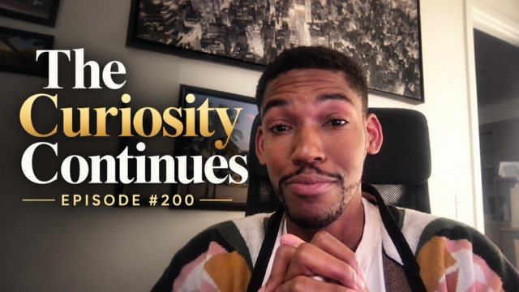

The Eclectic Polymath Podcast · Archive
#200 The Curiosity Continues...

About this episode
Two hundred episodes, five months, and more rabbit holes than I ever expected. We're back for another human check-in, and this time I'm reflecting on just how far The Eclectic Polymath has come, what I've learned along the way, and how this little experiment in curiosity keeps evolving.
I revisit some of my favorite episodes from the last stretch, the random moments that inspired them, and the connections that have started to emerge across everything we've explored. From Bruce Lee and Big Ben to Erykah Badu, Marvel, marriage, and everything in between, I'm learning more about what makes a great episode, what sparks my curiosity, and how this podcast has become my own personal curriculum.
Key points
- Two hundred episodes, five months, and more rabbit holes than I ever expected.
- We're back for another human check-in, and this time I'm reflecting on just how far The Eclectic Polymath has come, what I've learned along the way, and how this little experiment in curiosity keeps evolving.
- From Bruce Lee and Big Ben to Erykah Badu, Marvel, marriage, and everything in between, I'm learning more about what makes a great episode, what sparks my curiosity, and how this podcast has become my own personal curriculum.
- But I'm also thinking about the bigger experiment.